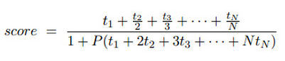

Alice设计了一个树结构，有 N 个结点（包括根）被依次编号为 1 到 N ，由 N-1 条边连接。后来，Bob在上面增
加了 K 条原来没有的边（也就是说既不是自环，也不会因此产生重边）并称这样得到的图为“K-嫁接树”。现在A
lice希望对嫁接树的每一个结点进行染色，允许使用的颜色恰有 N 种，分别编号为 1 到 N 。Alice要求相邻两个
结点要涂上不同的颜色。假设颜色为 i 的结点有 ti 个，则Bob给出了如下的评价分数：

其中 P 为非负系数。现在，Alice希望可以找到一种染色方案，使得Bob给出来的评分最大。你能帮助他吗？